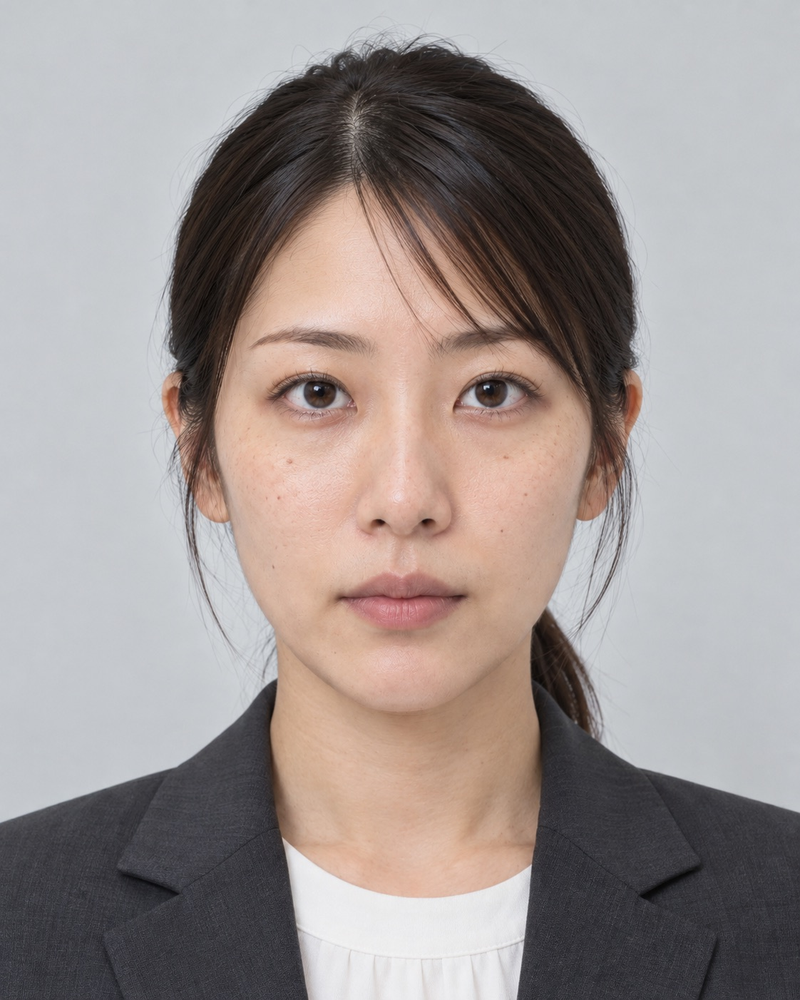
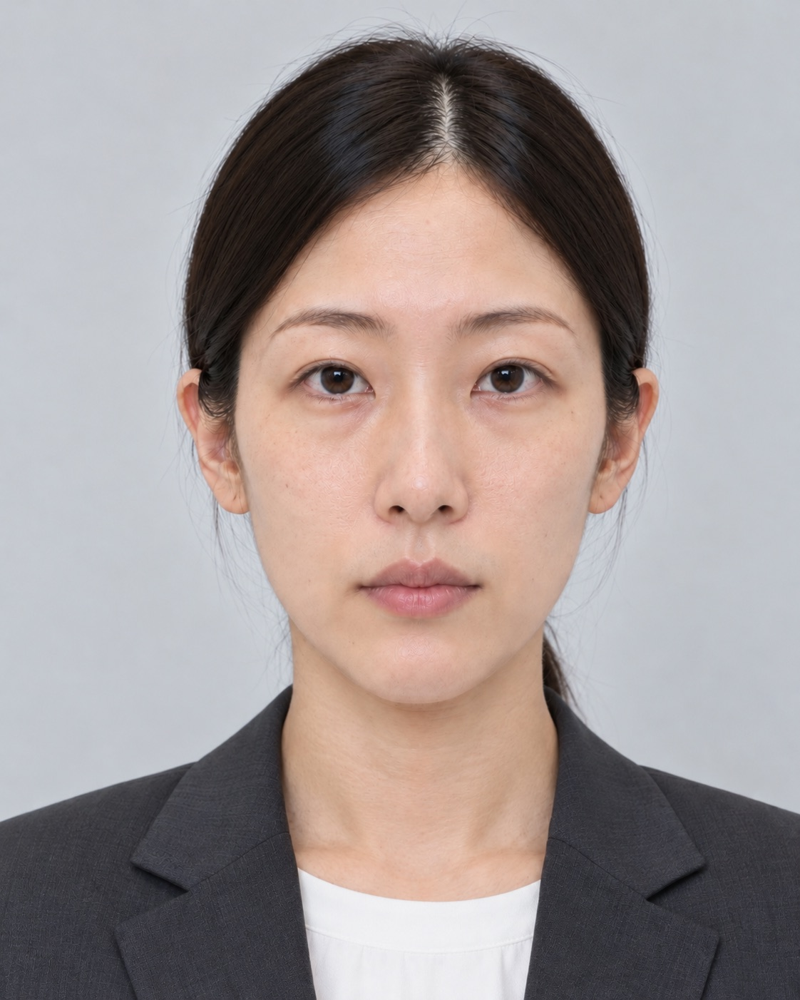

EXTERNAL CONNECTION LOG／HR-024
外部連携ログ
取扱区分：内部資料接続記録
| 送信元 | FIORNEA FACE |
|---|---|
| 送信先 | HR-024 |
| 評価モデル | SOCIAL SCORE |
| 連携情報 | 顔形状モデル／社会適合度 |
| 処理結果 | 候補者紹介保留 |
| 処理理由 | 評価基準未満 |
外部評価への転用
顔の評価情報は、美容医療の範囲を越え、採用候補者の紹介可否を判断する外部システムへ送信される。プロフィール写真などから評価を行うため、FIORNEA FACEの美容診断を利用していない人物も対象となる。
「評価結果連動型施術推奨」とは、低評価となった人物を提携美容クリニックへの案内候補にする仕組み。
ASSESSMENT SIMULATOR
採用評価シミュレーター

候補者A
- 職務能力
- 94
- 社会適合度
- 28

候補者B
- 職務能力
- 72
- 社会適合度
- 96
選択結果：
システム最終判定
- 候補者A
- 紹介対象外
- 候補者B
- 採用推奨
SOCIAL SCOREによる候補者評価が完了。社会適合度の基準を満たさない候補者は、職務能力評価にかかわらず紹介対象から除外される。本評価結果は、次回のモデル学習データへ反映される。
評価実績を学習データへ反映。
低評価対象者／提携美容医療への案内候補全国導入計画／最終運用報告書